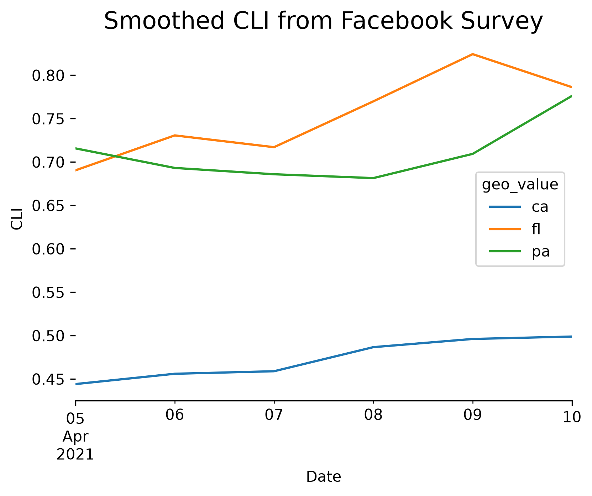

Getting started¶
The epidatpy package provides access to all the endpoints of the Delphi Epidata API, and can be used to make requests for specific signals on specific dates and in select geographic regions.
Basic usage¶
Fetching data from the Delphi Epidata API is simple. Suppose we are interested in the covidcast endpoint, which provides access to a wide range of data on COVID-19. Reviewing the endpoint documentation, we see that we need to specify a data source name, a signal name, a geographic level, a time resolution, and the location and times of interest.
The pub_covidcast function lets us access the covidcast endpoint. Here we
demonstrate how to fetch the most up-to-date version of the confirmed cumulative COVID cases
from the JHU CSSE data source at the national level.
from epidatpy import CovidcastEpidata, EpiDataContext, EpiRange
# Create the client object. Note that due to the arguments below all results
# will be cached to your disk for 7 days, which helps avoid making repeated
# downloads.
epidata = EpiDataContext(use_cache=True, cache_max_age_days=7)
# `pub_covidcast` returns an `EpiDataCall`, which is a not-yet-executed query
# that can be inspected.
apicall = epidata.pub_covidcast(
data_source="jhu-csse",
signals="confirmed_cumulative_num",
geo_type="nation",
time_type="day",
geo_values="us",
time_values=EpiRange(20210405, 20210410),
)
print(apicall)
# The query can be executed and converted to a DataFrame by using the `.df()`
# method:
apicall.df()
/home/runner/work/epidatpy/epidatpy/epidatpy/_endpoints.py:708: UserWarning: `pub_covidcast` uses the V4 Epidata API. Starting in October 2026, V4 is tentatively deprecated in favor of the V5 API. See the migration guide (https://cmu-delphi.github.io/epidatpy/migration_guide.html) for the V5 endpoints and how to move to them.
_warn_v4_sunset("pub_covidcast")
EpiDataCall(endpoint=covidcast/, params={'data_source': 'jhu-csse', 'signals': 'confirmed_cumulative_num', 'geo_type': 'nation', 'time_type': 'day', 'geo_values': 'us', 'time_values': '20210405-20210410'})
| source | signal | geo_type | geo_value | time_type | time_value | issue | lag | value | stderr | sample_size | direction | missing_value | missing_stderr | missing_sample_size | |
|---|---|---|---|---|---|---|---|---|---|---|---|---|---|---|---|
| 0 | jhu-csse | confirmed_cumulative_num | nation | us | day | 2021-04-05 | 2023-03-10 | 704 | 30874278.0 | <NA> | <NA> | <NA> | 0 | 5 | 5 |
| 1 | jhu-csse | confirmed_cumulative_num | nation | us | day | 2021-04-06 | 2023-03-10 | 703 | 30937664.0 | <NA> | <NA> | <NA> | 0 | 5 | 5 |
| 2 | jhu-csse | confirmed_cumulative_num | nation | us | day | 2021-04-07 | 2023-03-10 | 702 | 31013399.0 | <NA> | <NA> | <NA> | 0 | 5 | 5 |
| 3 | jhu-csse | confirmed_cumulative_num | nation | us | day | 2021-04-08 | 2023-03-10 | 701 | 31093208.0 | <NA> | <NA> | <NA> | 0 | 5 | 5 |
| 4 | jhu-csse | confirmed_cumulative_num | nation | us | day | 2021-04-09 | 2023-03-10 | 700 | 31177602.0 | <NA> | <NA> | <NA> | 0 | 5 | 5 |
| 5 | jhu-csse | confirmed_cumulative_num | nation | us | day | 2021-04-10 | 2023-03-10 | 699 | 31247947.0 | <NA> | <NA> | <NA> | 0 | 5 | 5 |
# Create the pub_covidcast-specific client object. This you to find what sources
# and signals are available without leaving your REPL.
covidcast = CovidcastEpidata(use_cache=True, cache_max_age_days=7)
# Get a list of all the sources available in the pub_covidcast endpoint.
print(covidcast.source_names())
print(covidcast.signal_names("jhu-csse"))
# Obtain the same data as above with a different interface.
covidcast["jhu-csse", "confirmed_cumulative_num"].call(
"nation",
"us",
EpiRange(20210405, 20210410),
).df()
# See the "Finding data of interest" notebook for more features of this interface.
['chng', 'covid-act-now', 'doctor-visits', 'fb-survey', 'google-symptoms', 'hhs', 'hospital-admissions', 'indicator-combination-cases-deaths', 'jhu-csse', 'safegraph-weekly', 'usa-facts', 'ght', 'google-survey', 'indicator-combination-nmf', 'safegraph-daily', 'nchs-mortality', 'dsew-cpr', 'nssp', 'nhsn', 'beta_google_symptoms', 'beta_nssp', 'beta_nssp_github']
['confirmed_cumulative_num', 'confirmed_7dav_incidence_num', 'confirmed_7dav_incidence_prop', 'confirmed_cumulative_prop', 'confirmed_incidence_num', 'confirmed_incidence_prop', 'deaths_cumulative_num', 'deaths_7dav_incidence_num', 'deaths_7dav_incidence_prop', 'deaths_cumulative_prop', 'deaths_incidence_num', 'deaths_incidence_prop']
| source | signal | geo_type | geo_value | time_type | time_value | issue | lag | value | stderr | sample_size | direction | missing_value | missing_stderr | missing_sample_size | |
|---|---|---|---|---|---|---|---|---|---|---|---|---|---|---|---|
| 0 | jhu-csse | confirmed_cumulative_num | nation | us | day | 2021-04-05 | 2023-03-10 | 704 | 30874278.0 | <NA> | <NA> | <NA> | 0 | 5 | 5 |
| 1 | jhu-csse | confirmed_cumulative_num | nation | us | day | 2021-04-06 | 2023-03-10 | 703 | 30937664.0 | <NA> | <NA> | <NA> | 0 | 5 | 5 |
| 2 | jhu-csse | confirmed_cumulative_num | nation | us | day | 2021-04-07 | 2023-03-10 | 702 | 31013399.0 | <NA> | <NA> | <NA> | 0 | 5 | 5 |
| 3 | jhu-csse | confirmed_cumulative_num | nation | us | day | 2021-04-08 | 2023-03-10 | 701 | 31093208.0 | <NA> | <NA> | <NA> | 0 | 5 | 5 |
| 4 | jhu-csse | confirmed_cumulative_num | nation | us | day | 2021-04-09 | 2023-03-10 | 700 | 31177602.0 | <NA> | <NA> | <NA> | 0 | 5 | 5 |
| 5 | jhu-csse | confirmed_cumulative_num | nation | us | day | 2021-04-10 | 2023-03-10 | 699 | 31247947.0 | <NA> | <NA> | <NA> | 0 | 5 | 5 |
Each row represents one observation in the US on one
day. The geographical abbreviation is given in the geo_value column, the date in
the time_value column. Here value is the requested signal – in this
case, the smoothed estimate of the percentage of people with COVID-like
illness, based on the symptom surveys, and stderr is its standard error.
The Epidata API makes signals available at different geographic levels,
depending on the endpoint. To request signals for all states instead of the
entire US, we use the geo_type argument paired with * for the
geo_values argument. (Only some endpoints allow for the use of * to
access data at all locations. Check the help for a given endpoint to see if
it supports *.)
epidata.pub_covidcast(
data_source="fb-survey",
signals="smoothed_cli",
geo_type="state",
time_type="day",
geo_values="*",
time_values=EpiRange(20210405, 20210410),
).df()
/home/runner/work/epidatpy/epidatpy/epidatpy/_endpoints.py:708: UserWarning: `pub_covidcast` uses the V4 Epidata API. Starting in October 2026, V4 is tentatively deprecated in favor of the V5 API. See the migration guide (https://cmu-delphi.github.io/epidatpy/migration_guide.html) for the V5 endpoints and how to move to them.
_warn_v4_sunset("pub_covidcast")
| source | signal | geo_type | geo_value | time_type | time_value | issue | lag | value | stderr | sample_size | direction | missing_value | missing_stderr | missing_sample_size | |
|---|---|---|---|---|---|---|---|---|---|---|---|---|---|---|---|
| 0 | fb-survey | smoothed_cli | state | ak | day | 2021-04-05 | 2021-04-10 | 5 | 0.736883 | 0.275805 | 720.0 | <NA> | 0 | 0 | 0 |
| 1 | fb-survey | smoothed_cli | state | al | day | 2021-04-05 | 2021-04-10 | 5 | 0.796627 | 0.137734 | 3332.1117 | <NA> | 0 | 0 | 0 |
| 2 | fb-survey | smoothed_cli | state | ar | day | 2021-04-05 | 2021-04-10 | 5 | 0.561916 | 0.131108 | 2354.9911 | <NA> | 0 | 0 | 0 |
| 3 | fb-survey | smoothed_cli | state | az | day | 2021-04-05 | 2021-04-10 | 5 | 0.62283 | 0.105354 | 4742.2778 | <NA> | 0 | 0 | 0 |
| 4 | fb-survey | smoothed_cli | state | ca | day | 2021-04-05 | 2021-04-10 | 5 | 0.444169 | 0.040576 | 21382.3806 | <NA> | 0 | 0 | 0 |
| ... | ... | ... | ... | ... | ... | ... | ... | ... | ... | ... | ... | ... | ... | ... | ... |
| 301 | fb-survey | smoothed_cli | state | vt | day | 2021-04-10 | 2021-04-15 | 5 | 0.496408 | 0.237163 | 789.0011 | <NA> | 0 | 0 | 0 |
| 302 | fb-survey | smoothed_cli | state | wa | day | 2021-04-10 | 2021-04-15 | 5 | 0.573955 | 0.082897 | 6378.9502 | <NA> | 0 | 0 | 0 |
| 303 | fb-survey | smoothed_cli | state | wi | day | 2021-04-10 | 2021-04-15 | 5 | 0.552162 | 0.093652 | 4802.9953 | <NA> | 0 | 0 | 0 |
| 304 | fb-survey | smoothed_cli | state | wv | day | 2021-04-10 | 2021-04-15 | 5 | 0.726741 | 0.173248 | 2034.1066 | <NA> | 0 | 0 | 0 |
| 305 | fb-survey | smoothed_cli | state | wy | day | 2021-04-10 | 2021-04-15 | 5 | 1.205129 | 0.416785 | 573.7192 | <NA> | 0 | 0 | 0 |
306 rows × 15 columns
Alternatively, we can fetch the full time series for a subset of states by
listing out the desired locations in the geo_value argument and using
* in the time_values argument:
epidata.pub_covidcast(
data_source="fb-survey",
signals="smoothed_cli",
geo_type="state",
time_type="day",
geo_values="pa,ca,fl",
time_values="*",
).df()
/home/runner/work/epidatpy/epidatpy/epidatpy/_endpoints.py:708: UserWarning: `pub_covidcast` uses the V4 Epidata API. Starting in October 2026, V4 is tentatively deprecated in favor of the V5 API. See the migration guide (https://cmu-delphi.github.io/epidatpy/migration_guide.html) for the V5 endpoints and how to move to them.
_warn_v4_sunset("pub_covidcast")
| source | signal | geo_type | geo_value | time_type | time_value | issue | lag | value | stderr | sample_size | direction | missing_value | missing_stderr | missing_sample_size | |
|---|---|---|---|---|---|---|---|---|---|---|---|---|---|---|---|
| 0 | fb-survey | smoothed_cli | state | ca | day | 2020-04-06 | 2020-09-03 | 150 | 0.727647 | 0.136668 | 3116.6652 | <NA> | 0 | 0 | 0 |
| 1 | fb-survey | smoothed_cli | state | fl | day | 2020-04-06 | 2020-09-03 | 150 | 0.605006 | 0.126229 | 2657.0001 | <NA> | 0 | 0 | 0 |
| 2 | fb-survey | smoothed_cli | state | pa | day | 2020-04-06 | 2020-09-03 | 150 | 0.852422 | 0.138715 | 3299.0016 | <NA> | 0 | 0 | 0 |
| 3 | fb-survey | smoothed_cli | state | ca | day | 2020-04-07 | 2020-09-03 | 149 | 0.672257 | 0.073444 | 9616.9951 | <NA> | 0 | 0 | 0 |
| 4 | fb-survey | smoothed_cli | state | fl | day | 2020-04-07 | 2020-09-03 | 149 | 0.705451 | 0.070535 | 10420.0016 | <NA> | 0 | 0 | 0 |
| ... | ... | ... | ... | ... | ... | ... | ... | ... | ... | ... | ... | ... | ... | ... | ... |
| 2434 | fb-survey | smoothed_cli | state | fl | day | 2022-06-26 | 2022-06-28 | 2 | 3.606007 | 0.197311 | 7184.0002 | <NA> | 0 | 0 | 0 |
| 2435 | fb-survey | smoothed_cli | state | pa | day | 2022-06-26 | 2022-06-28 | 2 | 2.046306 | 0.195172 | 4194.0018 | <NA> | 0 | 0 | 0 |
| 2436 | fb-survey | smoothed_cli | state | ca | day | 2022-06-27 | 2022-06-28 | 1 | 3.368872 | 0.1838 | 7719.148 | <NA> | 0 | 0 | 0 |
| 2437 | fb-survey | smoothed_cli | state | fl | day | 2022-06-27 | 2022-06-28 | 1 | 3.740106 | 0.219306 | 5990.0001 | <NA> | 0 | 0 | 0 |
| 2438 | fb-survey | smoothed_cli | state | pa | day | 2022-06-27 | 2022-06-28 | 1 | 1.942765 | 0.209353 | 3460.0016 | <NA> | 0 | 0 | 0 |
2439 rows × 15 columns
Getting versioned data¶
The Epidata API stores a historical record of all data, including corrections
and updates, which is particularly useful for accurately backtesting
forecasting models. To fetch versioned data, we can use the as_of
argument:
epidata.pub_covidcast(
data_source="fb-survey",
signals="smoothed_cli",
geo_type="state",
time_type="day",
geo_values="pa",
time_values=EpiRange(20210405, 20210410),
as_of="2021-06-01",
).df()
/home/runner/work/epidatpy/epidatpy/epidatpy/_endpoints.py:708: UserWarning: `pub_covidcast` uses the V4 Epidata API. Starting in October 2026, V4 is tentatively deprecated in favor of the V5 API. See the migration guide (https://cmu-delphi.github.io/epidatpy/migration_guide.html) for the V5 endpoints and how to move to them.
_warn_v4_sunset("pub_covidcast")
| source | signal | geo_type | geo_value | time_type | time_value | issue | lag | value | stderr | sample_size | direction | missing_value | missing_stderr | missing_sample_size | |
|---|---|---|---|---|---|---|---|---|---|---|---|---|---|---|---|
| 0 | fb-survey | smoothed_cli | state | pa | day | 2021-04-05 | 2021-04-10 | 5 | 0.715758 | 0.072999 | 10894.0057 | <NA> | 0 | 0 | 0 |
| 1 | fb-survey | smoothed_cli | state | pa | day | 2021-04-06 | 2021-04-11 | 5 | 0.69321 | 0.070869 | 10862.0055 | <NA> | 0 | 0 | 0 |
| 2 | fb-survey | smoothed_cli | state | pa | day | 2021-04-07 | 2021-04-12 | 5 | 0.685934 | 0.070654 | 10790.0054 | <NA> | 0 | 0 | 0 |
| 3 | fb-survey | smoothed_cli | state | pa | day | 2021-04-08 | 2021-04-13 | 5 | 0.681511 | 0.071394 | 10731.0044 | <NA> | 0 | 0 | 0 |
| 4 | fb-survey | smoothed_cli | state | pa | day | 2021-04-09 | 2021-04-14 | 5 | 0.709416 | 0.072162 | 10590.0049 | <NA> | 0 | 0 | 0 |
| 5 | fb-survey | smoothed_cli | state | pa | day | 2021-04-10 | 2021-04-15 | 5 | 0.77624 | 0.076037 | 10492.0055 | <NA> | 0 | 0 | 0 |
We can also request all versions of the data issued within a specific time range using the issues argument. issues can also take a single date.
# See how the estimate for a SINGLE day (March 1, 2021) evolved
# by fetching all issues reported between March and April 2021.
epidata.pub_covidcast(
data_source="fb-survey",
signals="smoothed_cli",
geo_type="state",
time_type="day",
geo_values="pa",
time_values="2021-03-01",
issues=EpiRange("2021-03-01", "2021-04-30"),
).df()
/home/runner/work/epidatpy/epidatpy/epidatpy/_endpoints.py:708: UserWarning: `pub_covidcast` uses the V4 Epidata API. Starting in October 2026, V4 is tentatively deprecated in favor of the V5 API. See the migration guide (https://cmu-delphi.github.io/epidatpy/migration_guide.html) for the V5 endpoints and how to move to them.
_warn_v4_sunset("pub_covidcast")
| source | signal | geo_type | geo_value | time_type | time_value | issue | lag | value | stderr | sample_size | direction | missing_value | missing_stderr | missing_sample_size | |
|---|---|---|---|---|---|---|---|---|---|---|---|---|---|---|---|
| 0 | fb-survey | smoothed_cli | state | pa | day | 2021-03-01 | 2021-03-02 | 1 | 0.627296 | 0.065577 | 11549.0065 | <NA> | 0 | 0 | 0 |
| 1 | fb-survey | smoothed_cli | state | pa | day | 2021-03-01 | 2021-03-03 | 2 | 0.627296 | 0.065577 | 11549.0065 | <NA> | 0 | 0 | 0 |
| 2 | fb-survey | smoothed_cli | state | pa | day | 2021-03-01 | 2021-03-04 | 3 | 0.62697 | 0.065543 | 11555.0065 | <NA> | 0 | 0 | 0 |
| 3 | fb-survey | smoothed_cli | state | pa | day | 2021-03-01 | 2021-03-05 | 4 | 0.62697 | 0.065543 | 11555.0065 | <NA> | 0 | 0 | 0 |
| 4 | fb-survey | smoothed_cli | state | pa | day | 2021-03-01 | 2021-03-06 | 5 | 0.62697 | 0.065543 | 11555.0065 | <NA> | 0 | 0 | 0 |
| 5 | fb-survey | smoothed_cli | state | pa | day | 2021-03-01 | 2021-03-17 | 16 | 0.627296 | 0.065577 | 11549.0065 | <NA> | 0 | 0 | 0 |
Finally, we can use the lag argument to request only data that was reported a certain number of days after the event.
# Fetch survey data for January 2021, but ONLY include data
# that was issued exactly 2 days after it was collected.
epidata.pub_covidcast(
data_source="fb-survey",
signals="smoothed_cli",
geo_type="state",
time_type="day",
geo_values="pa",
time_values=EpiRange(20210101, 20210131),
lag=2,
).df()
/home/runner/work/epidatpy/epidatpy/epidatpy/_endpoints.py:708: UserWarning: `pub_covidcast` uses the V4 Epidata API. Starting in October 2026, V4 is tentatively deprecated in favor of the V5 API. See the migration guide (https://cmu-delphi.github.io/epidatpy/migration_guide.html) for the V5 endpoints and how to move to them.
_warn_v4_sunset("pub_covidcast")
| source | signal | geo_type | geo_value | time_type | time_value | issue | lag | value | stderr | sample_size | direction | missing_value | missing_stderr | missing_sample_size | |
|---|---|---|---|---|---|---|---|---|---|---|---|---|---|---|---|
| 0 | fb-survey | smoothed_cli | state | pa | day | 2021-01-01 | 2021-01-03 | 2 | 0.974616 | 0.070757 | 15506.0073 | <NA> | 0 | 0 | 0 |
| 1 | fb-survey | smoothed_cli | state | pa | day | 2021-01-02 | 2021-01-04 | 2 | 1.027451 | 0.072341 | 15706.0076 | <NA> | 0 | 0 | 0 |
| 2 | fb-survey | smoothed_cli | state | pa | day | 2021-01-03 | 2021-01-05 | 2 | 1.110676 | 0.074977 | 15936.0092 | <NA> | 0 | 0 | 0 |
| 3 | fb-survey | smoothed_cli | state | pa | day | 2021-01-04 | 2021-01-06 | 2 | 1.089768 | 0.074348 | 16081.0094 | <NA> | 0 | 0 | 0 |
| 4 | fb-survey | smoothed_cli | state | pa | day | 2021-01-05 | 2021-01-07 | 2 | 1.098587 | 0.074958 | 15957.0097 | <NA> | 0 | 0 | 0 |
| ... | ... | ... | ... | ... | ... | ... | ... | ... | ... | ... | ... | ... | ... | ... | ... |
| 26 | fb-survey | smoothed_cli | state | pa | day | 2021-01-27 | 2021-01-29 | 2 | 0.845197 | 0.070962 | 13801.0091 | <NA> | 0 | 0 | 0 |
| 27 | fb-survey | smoothed_cli | state | pa | day | 2021-01-28 | 2021-01-30 | 2 | 0.797614 | 0.068875 | 13845.0091 | <NA> | 0 | 0 | 0 |
| 28 | fb-survey | smoothed_cli | state | pa | day | 2021-01-29 | 2021-01-31 | 2 | 0.797824 | 0.069499 | 13756.0099 | <NA> | 0 | 0 | 0 |
| 29 | fb-survey | smoothed_cli | state | pa | day | 2021-01-30 | 2021-02-01 | 2 | 0.764435 | 0.067864 | 13542.0096 | <NA> | 0 | 0 | 0 |
| 30 | fb-survey | smoothed_cli | state | pa | day | 2021-01-31 | 2021-02-02 | 2 | 0.777567 | 0.069241 | 13290.0088 | <NA> | 0 | 0 | 0 |
31 rows × 15 columns
See detail notebook about versioned data for details and more ways to specify versioned data.
Plotting¶
Because the output data is a standard Pandas DataFrame, we can easily plot it using any of the available Python libraries:
import matplotlib.pyplot as plt
plt.rcParams["figure.dpi"] = 300
apicall = epidata.pub_covidcast(
data_source="fb-survey",
signals="smoothed_cli",
geo_type="state",
geo_values="pa,ca,fl",
time_type="day",
time_values=EpiRange(20210405, 20210410),
)
fig, ax = plt.subplots(figsize=(6, 5))
ax.spines["right"].set_visible(False)
ax.spines["left"].set_visible(False)
ax.spines["top"].set_visible(False)
(
apicall.df()
.pivot_table(values="value", index="time_value", columns="geo_value")
.plot(xlabel="Date", ylabel="CLI", ax=ax, linewidth=1.5)
)
plt.title("Smoothed CLI from Facebook Survey", fontsize=16)
plt.subplots_adjust(bottom=0.2)
plt.show()
/home/runner/work/epidatpy/epidatpy/epidatpy/_endpoints.py:708: UserWarning: `pub_covidcast` uses the V4 Epidata API. Starting in October 2026, V4 is tentatively deprecated in favor of the V5 API. See the migration guide (https://cmu-delphi.github.io/epidatpy/migration_guide.html) for the V5 endpoints and how to move to them.
_warn_v4_sunset("pub_covidcast")

Finding locations of interest¶
Most data is only available for the US. Select endpoints report other countries at the national and/or regional levels. Endpoint descriptions explicitly state when they cover non-US locations.
For the main endpoints that report US data, see the geographic coding documentation for available geographic levels. Documentation for the other endpoints is available here.
International data¶
International data is available via
pub_dengue_nowcast(North and South America)pub_ecdc_ili(Europe)pub_kcdc_ili(Korea)pub_nidss_dengue(Taiwan)pub_nidss_flu(Taiwan)pub_paho_dengue(North and South America)pvt_dengue_sensors(North and South America)
Finding data sources and signals of interest¶
Above we used data from Delphi’s symptom surveys, but the Epidata API includes numerous data streams: medical claims data, cases and deaths, mobility, and many others. This can make it a challenge to find the data stream that you are most interested in.
The Epidata documentation lists all the data sources and signals available through the API for COVID-19 and for other diseases.
Epiweeks and dates¶
Formatting for epiweeks is YYYYWW and for dates is YYYYMMDD.
Epiweeks use the U.S. CDC definition, which defines the first epiweek each year to be the first week containing January 4th and the start of the week is on Sunday. See this page for a less terse explanation.
When specifying the time_values argument, you can use individual values,
comma-separated lists or, a hyphenated range of values to specify single or
several dates (or epiweeks). An EpiRange object can be also used to construct
a range of epiweeks or dates. Examples include:
param = 201530(A single epiweek)param = '201401,201501,201601'(Several epiweeks)param = '200501-200552'(A range of epiweeks)param = '201440,201501-201510'(Several epiweeks, including a range)param = EpiRange(20070101, 20071231)(A range of dates)